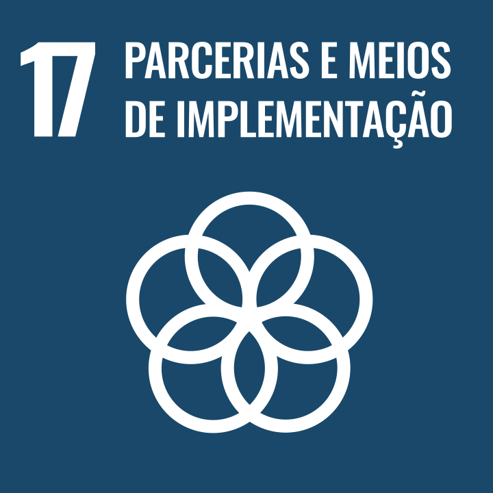

Objetivo de Desenvolvimento Sustentável 17
Parcerias e meios de implementação
Objetivo 17. Fortalecer os meios de implementação e revitalizar a parceria global para o desenvolvimento sustentável
17.1:
Fortalecer a mobilização de recursos internos, inclusive por meio do apoio internacional aos países em desenvolvimento, para melhorar a capacidade nacional para arrecadação de impostos e outras receitas
17.2:
Países desenvolvidos implementarem plenamente os seus compromissos em matéria de assistência oficial ao desenvolvimento [AOD], inclusive fornecer 0,7% da renda nacional bruta [RNB] em AOD aos países em desenvolvimento, dos quais 0,15% a 0,20% para os países menos desenvolvidos; provedores de AOD são encorajados a considerar definir uma meta para fornecer pelo menos 0,20% da RNB em AOD para os países menos desenvolvidos
17.3:
Mobilizar recursos financeiros adicionais para os países em desenvolvimento a partir de múltiplas fontes
17.4:
Ajudar os países em desenvolvimento a alcançar a sustentabilidade da dívida de longo prazo por meio de políticas coordenadas destinadas a promover o financiamento, a redução e a reestruturação da dívida, conforme apropriado, e tratar da dívida externa dos países pobres altamente endividados para reduzir o superendividamento
17.5:
Adotar e implementar regimes de promoção de investimentos para os países menos desenvolvidos
17.6:
Melhorar a cooperação Norte-Sul, Sul-Sul e triangular regional e internacional e o acesso à ciência, tecnologia e inovação, e aumentar o compartilhamento de conhecimentos em termos mutuamente acordados, inclusive por meio de melhor coordenação entre mecanismos existentes e de um mecanismo de facilitação de tecnologia global
17.7:
Promover o desenvolvimento, a transferência, a disseminação e a difusão de tecnologias ambientalmente corretas para os países em desenvolvimento, em condições favoráveis, inclusive em condições concessionais e preferenciais, conforme mutuamente acordado
17.8:
Operacionalizar plenamente o Banco de Tecnologia e o mecanismo de capacitação em ciência, tecnologia e inovação para os países menos desenvolvidos até 2017, e aumentar o uso de tecnologias de capacitação, em particular das tecnologias de informação e comunicação
17.9:
Reforçar o apoio internacional para a implementação eficaz e orientada da capacitação em países em desenvolvimento, a fim de apoiar os planos nacionais para implementar todos os objetivos de desenvolvimento sustentável, inclusive por meio da cooperação Norte-Sul, Sul-Sul e triangular
17.10:
Promover um sistema multilateral de comércio universal, baseado em regras, aberto, não discriminatório e equitativo no âmbito da Organização Mundial do Comércio, inclusive por meio da conclusão das negociações da Agenda de Desenvolvimento de Doha
17.11:
Aumentar significativamente as exportações dos países em desenvolvimento, em particular com o objetivo de duplicar a participação dos países menos desenvolvidos nas exportações globais até 2020
17.12:
Concretizar a implementação oportuna de acesso a mercados livres de cotas e tarifas para todos os países menos desenvolvidos, de acordo com as decisões da OMC, garantindo que as regras de origem preferenciais sejam transparentes, simples e facilitem o acesso ao mercado
17.13:
Aumentar a estabilidade macroeconômica global, inclusive por meio da coordenação e coerência de políticas
17.14:
Aumentar a coerência das políticas para o desenvolvimento sustentável
17.15:
Respeitar o espaço político e a liderança de cada país para estabelecer e implementar políticas para a erradicação da pobreza e o desenvolvimento sustentável
17.16:
Reforçar a parceria global para o desenvolvimento sustentável, complementada por parcerias multissetoriais que mobilizem e compartilhem conhecimento, expertise, tecnologia e recursos financeiros, para apoiar a realização dos objetivos do desenvolvimento sustentável em todos os países
17.17:
Incentivar e promover parcerias públicas, público-privadas e com a sociedade civil eficazes, a partir da experiência das estratégias de mobilização de recursos dessas parcerias
17.18:
Até 2020, reforçar o apoio à capacitação para os países em desenvolvimento, inclusive para os mais vulneráveis, para aumentar significativamente a disponibilidade de dados de alta qualidade, atuais e confiáveis, desagregados por renda, gênero, idade, raça, etnia, status migratório, deficiência, localização geográfica e outras características relevantes
17.19:
Até 2030, valer-se de iniciativas existentes para desenvolver medidas do progresso do desenvolvimento sustentável que complementem o produto interno bruto [PIB] e apoiem a capacitação estatística nos países em desenvolvimento